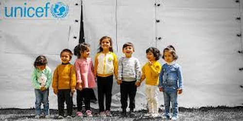
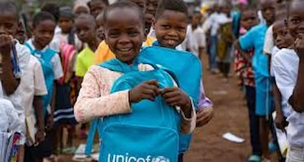
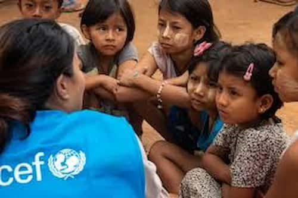
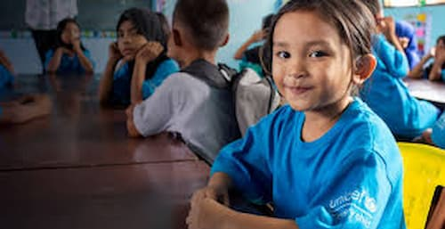
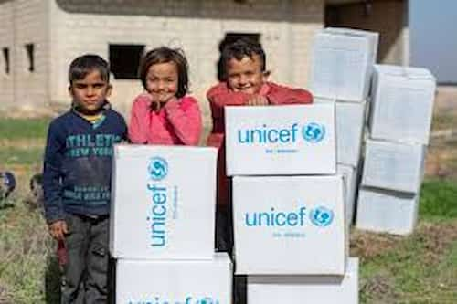
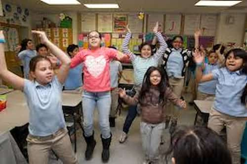
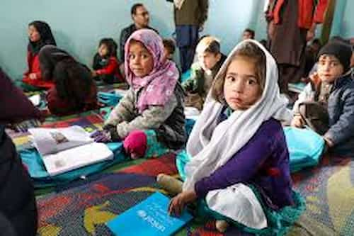
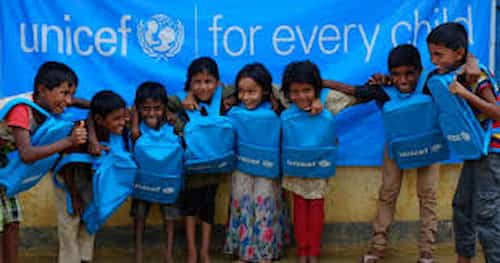
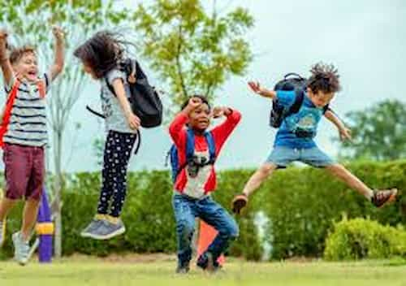
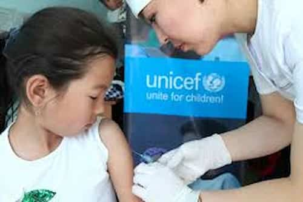

UNICEF — Article on sports empowerment
Sport Empowerment: Unlocking Human Potential Through Athletics
Sport is more than a game; it is a universal language that transcends borders and cultures. At its heart, sport empowerment is about harnessing the transformative power of athletics to inspire individuals, strengthen communities, and promote equality. Whether on the field, in the gym, or through grassroots initiatives, sport has the capacity to empower people in ways that extend far beyond physical performance. One of the most profound impacts of sport empowerment is the development of confidence. When individuals engage in sports, they learn discipline, resilience, and the ability to overcome challenges. Every victory, no matter how small, reinforces self‑belief. For young people especially, athletics can instill a sense of identity and purpose. The lessons learned—teamwork, perseverance, and leadership—translate into everyday life, empowering them to face academic, social, and professional challenges with courage. Sport empowerment also plays a crucial role in breaking down barriers of inequality. Historically, women and girls have been marginalized in athletics, but initiatives worldwide are changing this narrative. By encouraging female participation, societies challenge stereotypes and promote inclusivity. Empowered female athletes become role models, proving that strength and determination are not defined by gender. Beyond confidence and equality, sport contributes to physical and mental health. Participation reduces the risk of chronic diseases, enhances fitness, and improves mental well‑being. Sports provide a constructive outlet for stress and emotional struggles, fostering resilience and balance. At the community level, sport fosters unity and social cohesion. Local tournaments and clubs create spaces where diverse groups come together, building trust and reducing tensions. Globally, athletes use their platforms to advocate for justice and inclusion, proving that sport is not only about competition but also about responsibility. Ultimately, sport empowerment unlocks human potential, transforming lives and communities.









